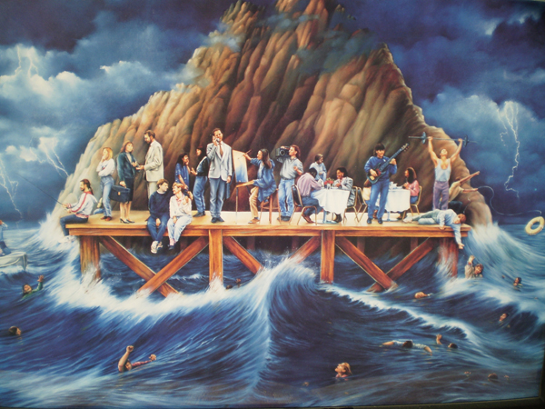

Who Cares? |

On one of my recent journeys, as I gazed from the coach window, I was led into a train of thought concerning the condition of the multitudes around me. They were living carelessly in the most open and shameless rebellion against God, without a thought for their eternal welfare. As I looked out of the window, I seemed to see them all... millions of people all around me given up to their drink and their pleasure, their dancing and their music, their business and their anxieties, their politics and their troubles. Ignorant-- willfully ignorant in many cases-- and in other instances knowing all about the truth and not caring at all. But all of them, the whole mass of them, sweeping on and up in their blasphemies and devilries to the Throne of God. While my mind was thus engaged, I had a vision.
I saw a dark and stormy ocean. Over it the black clouds hung heavily; through them every now and then vivid lightening flashed and loud thunder rolled, while the winds moaned, and the waves rose and foamed, towered and broke, only to rise and foam, tower and break again.
In that ocean I thought I saw myriads of poor human beings plunging and floating, shouting and shrieking, cursing and struggling and drowning; and as they cursed and screamed they rose and shrieked again, and then some sank to rise no more.
And I saw out of this dark angry ocean, a mighty rock that rose up with it's summit towering high above the black clouds that overhung the stormy sea. And all around the base of this great rock I saw a vast platform. Onto this platform, I saw with delight a number of the poor struggling, drowning wretches continually climbing out of the angry ocean. And I saw that a few of those who were already safe on the platform were helping the poor creatures still in the angry waters to reach the place of safety.
On looking more closely I found a number of those who had been rescued, industriously working and scheming by ladders, ropes, boats and other means more effective, to deliver the poor strugglers out of the sea. Here and there were some who actually jumped into the water, regardless of the consequences in their passion to "rescue the perishing." And I hardly know which gladdened me the most-- the sight of the poor drowning people climbing onto the rocks reaching a place of safety, or the devotion and self-sacrifice of those whose whole being was wrapped up in the effort for their deliverance.
As I looked on, I saw that the occupants of that platform were quite a mixed company. That is, they were divided into different "sets" or classes, and they occupied themselves with different pleasures and employments. But only a very few of them seemed to make it their business to get the people out of the sea.
But what puzzled me most was the fact that though all of them had been rescued at one time or another from the ocean, nearly everyone seemed to have forgotten all about it. Anyway, it seemed the memory of its darkness and danger no longer troubled them at all. And what seemed equally strange and perplexing to me was that these people did not even seem to have any care-- that is any agonizing care-- about the poor perishing ones who were struggling and drowning right before their very eyes... many of whom were their own husbands and wives, brothers and sisters and even their own children.
Now this astonishing unconcern could not have been the result of ignorance or lack of knowledge, because they lived right there in full sight of it all and even talked about it sometimes. Many even went regularly to hear lectures and sermons in which the awful state of these poor drowning creatures was described.
I have always said that the occupants of this platform were engaged in different pursuits and pastimes. Some of them were absorbed day and night in trading and business in order to make gain, storing up their savings in boxes, safes and the like.
Many spent their time in amusing themselves with growing flowers on the side of the rock, others in painting pieces of cloth or in playing music, or in dressing themselves up in different styles and walking about to be admired. Some occupied themselves chiefly in eating and drinking, others were taken up with arguing about the poor drowning creatures that had already been rescued.
But the thing to me that seemed the most amazing was that those on the platform to whom He called, who heard His voice and felt that they ought to obey it-- at least they said they did-- those who confessed to love Him much were in full sympathy with Him in the task He had undertaken-- who worshipped Him or who professed to do so-- were so taken up with their trades and professions, their money saving and pleasures, their families and circles, their religions and arguments about it, and their preparation for going to the mainland, that they did not listen to the cry that came to them from this Wonderful Being who had Himself gone down into the sea. Anyway, if they heard it they did not heed it. They did not care. And so the multitude went on right before them struggling and shrieking and drowning in the darkness.
And then I saw something that seemed to me even more strange than anything that had gone on before in this strange vision. I saw that some of these people on the platform whom this Wonderful Being had called to, wanting them to come and help Him in His difficult task of saving these perishing creatures, were always praying and crying out to Him to come to them!
Some wanted Him to come and stay with them, and spend His time and strength in making them happier. Others wanted Him to come and take away various doubts and misgivings they had concerning the truth of some letters He had written them. Some wanted Him to come and make them feel more secure on the rock-- so secure that they would be quite sure that they should never slip off again into the ocean. Numbers of others wanted Him to make them feel quite certain that they would really get off the rock and onto the mainland someday: because as a matter of fact, it was well known that some had walked so carelessly as to loose their footing, and had fallen back again into the stormy waters.
So these people used to meet and get up as high on the rock as they could, and looking towards the mainland (where they thought the Great Being was) they would cry out, "Come to us! Come and help us!" And all the while He was down (by His Spirit) among the poor struggling, drowning creatures in the angry deep, with His arms around them trying to drag them out, and looking up-- oh! so longingly but all in vain-- to those on the rock, crying to them with His voice all hoarse from calling, "Come to Me! Come, and help Me!
And then I understood it all. It was plain enough. The sea was the ocean of life-- the sea of real, actual human existence. That lightening was the gleaming of piercing truth coming from Jehovah's Throne. That thunder was the distant echoing of the wrath of God. Those multitudes of people shrieking, struggling and agonizing in the stormy sea, was the thousands and thousands of poor harlots and harlot-makers, of drunkards and drunkard makers, of thieves, liars, blasphemers and ungodly people of every kindred, tongue and nation.
Oh what a black sea it was! And oh, what multitudes of rich and poor, ignorant and educated were there. They were all so unalike in their outward circumstances and conditions, yet all alike in one thing-- all sinners before God-- all held by, and holding onto, some iniquity, fascinated by some idol, the slaves of some devilish lust, and ruled by the foul fiend from the bottomless pit!
"All alike in one thing?" No, all alike in two things-- not only the same in their wickedness but, unless rescued, the same in their sinking, sinking... down, down, down... to the same terrible doom. That great sheltering rock represented Calvary, the place where Jesus had died for them. And the people on it were those who had been rescued. The way they used their energies, gifts and time represented the occupations and amusements of those who professed to be saved from sin and hell-- followers of the Lord Jesus Christ. The handful of fierce, determined ones, who were risking their own lives in saving the perishing were true soldiers of the cross of Jesus. That Mighty Being who was calling to them from the midst of the angry waters was the Son of God, "the same yesterday, today and forever" who is still struggling and interceding to save the dying multitudes about us from this terrible doom of damnation, and whose voice can be heard above the music, machinery, and noise of life, calling on the rescued to come and help Him save the world.
My friends in Christ, you are rescued from the waters, you are on the rock, He is in the dark sea calling on you to come to Him and help Him. Will you go? Look for yourselves. The surging sea of life, crowded with perishing multitudes rolls up to the very spot on which you stand. Leaving the vision, I now come to speak of the fact-- a fact that is as real as the Bible, as real as the Christ who hung upon the cross, as real as the judgment day will be, and as real as the heaven and hell that will follow it.
Look! Don't be deceived by appearances-- men and things are not what they seem. All who are not on the rock are in the sea! Look at them from the standpoint of the great White Throne, and what a sight you have! Jesus Christ, the Son of God is, through His Spirit, in the midst of this dying multitude, struggling to save them. And He is calling on you to jump into the sea-- to go right away to His side and help Him in the holy strife. Will you jump? That is, will you go to His feet and place yourself absolutely at His disposal?
A young Christian once came to me, and told me that for some time she had been giving the Lord her profession and prayers and money, but now she wanted to give Him her life. She wanted to go right into the fight. In other words, she wanted to go to His assistance in the sea. As when a man from the shore, seeing another struggling in the water, takes off those outer garments that would hinder his efforts and leaps to the rescue, so will you who still linger on the bank, thinking and singing and praying about the poor perishing souls, lay aside your shame, your pride, your cares about other people's opinions, your love of ease and all the selfish loves that have kept you back for so long, and rush to the rescue of this multitude of dying men and women.
Does the surging sea look dark and dangerous? Unquestionably it is so. There is no doubt that the leap for you, as for everyone who takes it, means difficulty and scorn and suffering. For you it may mean more than this. It may mean death. He who beckons you from the sea however, knows what it will mean -- and knowing, He still calls to you and bids to you to come.
You must do it! You cannot hold back. You have enjoyed yourself in Christianity long enough. You have had pleasant feelings, pleasant songs, pleasant meetings, pleasant prospects. There has been much of human happiness, much clapping of hands and shouting of praises-- very much of heaven on earth.
Now then, go to God and tell Him you are prepared as much as necessary to turn your back upon it all, and that you are willing to spend the rest of your days struggling in the midst of these perishing multitudes, whatever it may cost you.
You must do it. With the light that is now broken in upon your mind and the call that is now sounding in your ears, and the beckoning hands that are now before your eyes, you have no alternative. To go down among the perishing crowds is your duty. Your happiness from now on will consist in sharing their misery, your ease in sharing their pain, your crown in helping them to bear their cross, and your heaven in going into the very jaws of hell to rescue them.